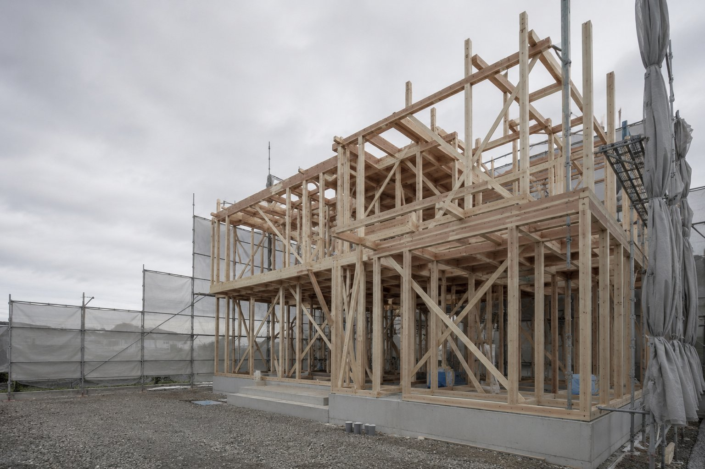
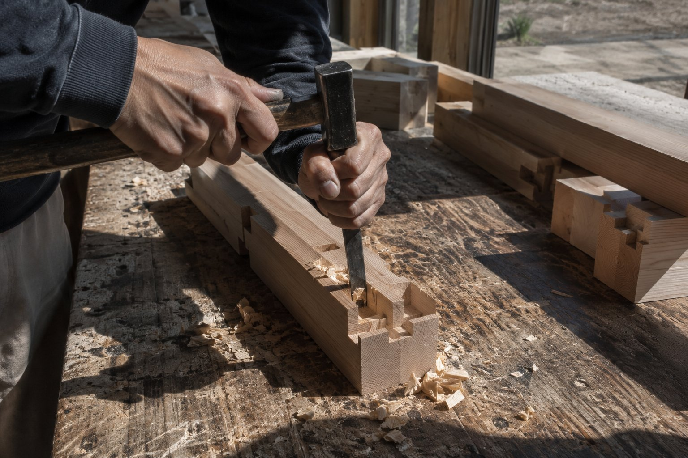
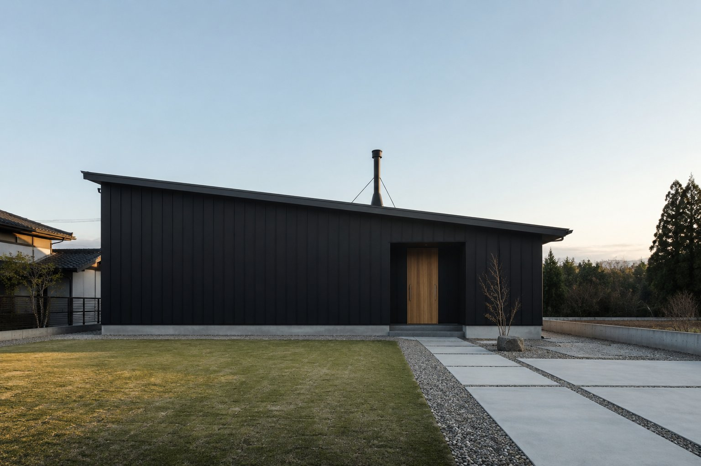
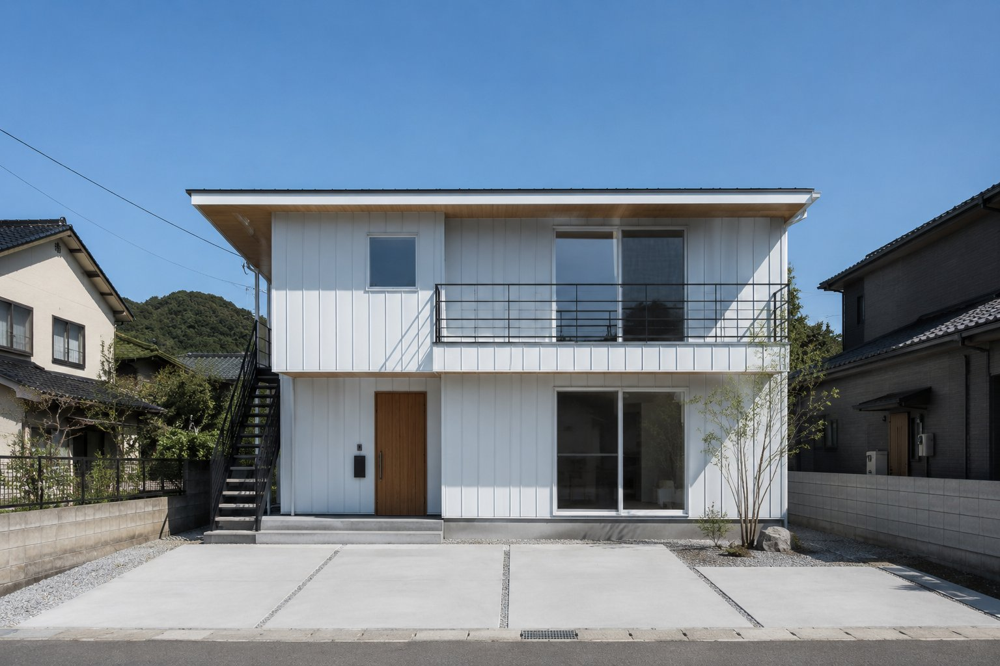
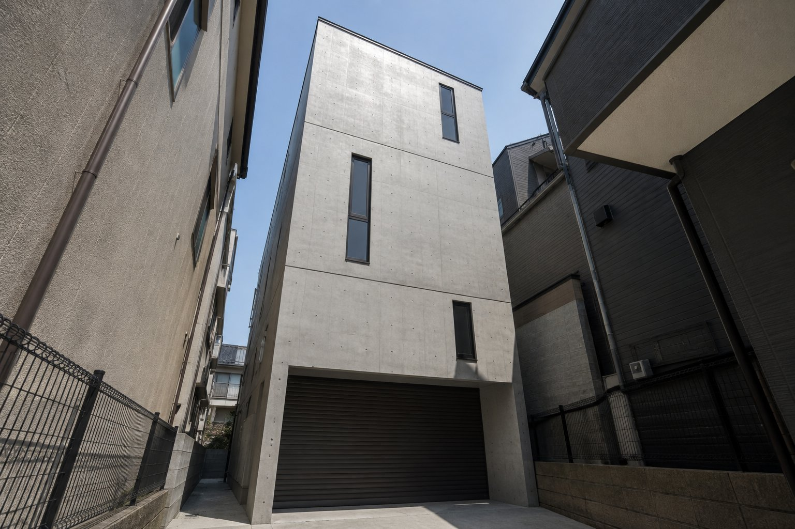
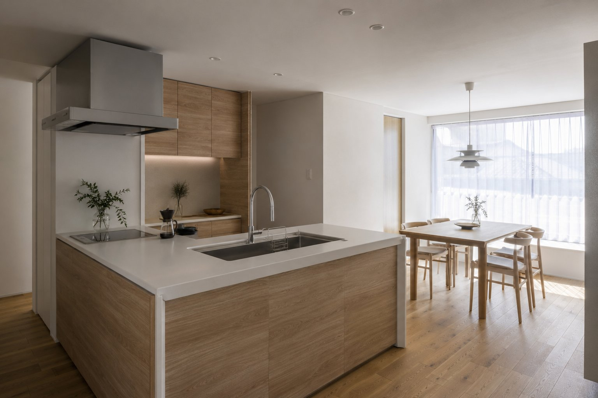

01 / 耐震
耐震等級3
消防署・警察署と同等の耐震性能。構造計算（許容応力度計算）を全棟で実施し、壁量・金物・基礎配筋を個別に決めます。
等級3
Fukui / Design-Build
耐震等級3・断熱等級6を全棟標準に。土地探しから資金計画、着工後のアフター点検まで、同じ担当者が最後まで伴走します。
About
設計士と現場監督を分業にせず、契約から引渡しまで同じ担当が窓口になります。図面と現場の間で伝言が薄まることを防ぐための体制です。
年間の着工は18棟までに絞っています。1棟あたりの打ち合わせ回数と現場の見回り頻度を確保するためで、これ以上は数を追いません。

Standard Spec
オプションではなく、全棟に標準で入っている仕様です。見積書の内訳としても同じ表記でお出ししています。
01 / 耐震
消防署・警察署と同等の耐震性能。構造計算（許容応力度計算）を全棟で実施し、壁量・金物・基礎配筋を個別に決めます。
等級302 / 断熱
HEAT20 G2相当の断熱性能。UA値0.46以下を標準とし、樹脂サッシ+トリプルガラスを基本仕様にしています。
UA 0.4603 / 気密
建てて終わりにせず、上棟後と完成後の2回、全棟でC値を実測します。目標値はC値0.5cm²/㎡以下です。
C値 0.504 / 構造
土台・通し柱には福井県産・国産の檜（ひのき）を使用。プレカット後も自社大工が刻み直しを行い、精度を確認します。
県産材05 / 保証
初期保証10年に、規定の点検を受けていただくことで最長20年まで延長。防水は別途10年保証を付けています。
最長20年06 / 点検
引渡し後3か月・1年・2年・5年・10年の計5回、無料で定期点検を実施します。10年目以降は有償で継続点検を承ります。
5回無料※ 数値は代表的な仕様に基づく設計値です。敷地条件・プランにより変動するため、確定値は個別のご提案時にお出しします。
Works
延床・工期・価格帯まで、実際にお出ししている見積りに近い形で並べています。
※ このサイトはデモのため、事例・施主名・住所はすべて架空のものです。

CASE 01 / 新築・平屋
薪ストーブを中心に据えた、廊下のない一室空間の平屋。ロフトを家事室に。断熱等級6+気密C値0.4を実測で達成しました。

CASE 02 / 新築・二世帯
玄関を分けず、水回りを1・2階に1系統ずつ設ける「ゆるやかな分離」型。将来の間取り変更を見込んで一部を可変壁にしています。

CASE 03 / 新築・狭小地
間口5.4mの旗竿地に建つビルトインガレージ付き3階建て。構造計算を個別に行い、耐震等級3を確保しています。

CASE 04 / リフォーム
築32年の戸建てで、キッチン・浴室・洗面・トイレの4点を同時に更新。既存の柱・梁の状態を先に調査し、傷みがあった土台の一部を補修しました。
Flow
土地がまだ無い状態からのご相談も承っています。契約前の打ち合わせは無料、平均3回ほどお会いしてからのご契約です。
ご予算とご希望のエリアを伺います。土地が未定の場合は、提携する地元不動産会社と一緒に候補地を探すところから始めます。
提携するファイナンシャルプランナーによる無料相談を挟みます。フラット35・提携金融機関の住宅ローンいずれも取次可能です。
敷地調査のうえ、間取り案とおおよその見積りをご提示します。契約前の打ち合わせは平均3回、費用はいただきません。
ご契約後、仕様・設備を1点ずつ決めていく実施設計に入ります。打ち合わせは平均8回、ショールームへの同行も承ります。
着工から上棟までは現場を週1回以上撮影し共有します。上棟後に1回目の気密測定を実施し、結果を先にお見せします。
第三者機関による完成検査に加え、社内検査を実施。引渡し時に2回目の気密測定結果と保証書一式をお渡しします。
引渡し後3か月・1年・2年・5年・10年の計5回、無料で点検にお伺いします。緊急の不具合は点検時期に関わらずご連絡ください。
Price
坪単価は本体工事費のみの目安です（税込）。地盤改良・外構・給排水引込みなどの付帯工事は別途で、実際の総額は敷地条件で変わります。正確な金額は敷地調査後にお出しします。
延床25〜32坪
78万円／坪〜
総額目安 2,000〜2,700万円台
延床32〜40坪
72万円／坪〜
総額目安 2,400〜3,300万円台
延床40坪〜／変形地
80万円／坪〜
総額目安 3,300万円台〜
※ リフォームは水回り1か所からご相談いただけます。工事の目安は最低50万円台からで、内容により大きく変わります。
※ 上記はいずれも税込・本体工事費の目安です。地盤改良（平均60〜120万円）・外構・登記・火災保険等は別途となります。
※ 対応エリアは福井市を中心に、鯖江市・越前市・坂井市・あわら市など片道60分圏内が目安です。圏外はご相談ください。
Open House
図面と完成見本帳だけでは伝わらない断熱・気密の体感を、実際の建物でご確認いただけます。月2回程度、施主様のご厚意で開催しています。
MONTHLY
竣工直前の実邸を、家具搬入前の状態でご覧いただきます。断熱・気密の体感や収納の使い方など、その場で質問いただけます。
月2回程度・土日開催 ／ 所要 約1時間 ／ 無料
ANYTIME
上棟後、壁や天井で隠れる前の骨組みと断熱材の入り方を見ていただく会です。開催時期は現場の進捗次第でご案内します。
現場の進捗により随時 ／ 所要 約1時間 ／ 無料
WEEKDAY
建物の前に、資金計画や土地探しから相談したい方向け。ファイナンシャルプランナーが同席する回もあります。
平日中心・要予約 ／ 所要 約1時間半 ／ 無料
※ 定休日は水曜日と第2・第4日曜日です。見学会は完成物件の都合により急遽中止・変更になる場合があります。
Access